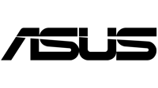

연동 VMS / NVR Integrations
Vaidio AI Vision Platform은 기존 보안 인프라와 원활하게 연동됩니다. VMS/NVR 파트너와의 5단계 연동 수준, 인증된 하드웨어 파트너를 확인하세요. The Vaidio AI Vision Platform integrates seamlessly with your existing security infrastructure. Explore our 5-level VMS/NVR integration framework and certified hardware partners.
VMS & NVR 연동 NVR & VMS Integrations
Vaidio는 VMS/NVR 파트너와 5단계의 연동 수준을 제공합니다. 기존 인프라를 교체하지 않고도 AI 영상분석을 즉시 적용할 수 있습니다. Vaidio offers five levels of integration with VMS/NVR partners, enabling AI video analytics without replacing your existing infrastructure.
| 레벨 Level | 연동 수준 설명 Integration Description | 지원 VMS/NVR 파트너 VMS Partners |
|---|---|---|
| 1 |
Level 1 Vaidio가 VMS로 경보를 전송합니다. Vaidio sends alerts to the VMS. |
|
| 2 |
Level 2 Vaidio가 VMS에서 영상을 수신합니다. Vaidio retrieves video from the VMS. |
|
| 3 |
Level 3 경보 전송 및 영상 수신 양방향 연동. Vaidio sends alerts and retrieves video. |
|
| 4 |
Level 4 경보 전송 및 영상 수신, VMS UI 내 탭으로 영상 검색 기능 제공. Vaidio sends alerts, retrieves video, and can be accessed as a tab in the VMS to conduct video search. |
|
| 5 |
Level 5 경보 전송, 영상 수신, VMS UI에서 직접 AI 객체 검색 또는 더 상세한 영상 검색 기능 제공 — 최고 수준 연동. Vaidio sends alerts, retrieves video, and enables object search directly in the VMS UI — highest level. |
|
※ 위 목록은 Vaidio 공식 연동 파트너 기준이며, 추가 연동 파트너는 지속적으로 확대되고 있습니다. 특정 VMS/NVR 연동 가능 여부는 퓨텍솔루션즈로 문의하세요. ※ The list above reflects official Vaidio integration partners and is continuously expanding. Contact Futec Solutions to inquire about integration availability for your specific VMS/NVR.
하드웨어 파트너 Hardware Partners
Vaidio는 아래 하드웨어 파트너와의 상호 테스트 및 인증을 완료하여 안정적인 AI 영상분석 환경을 보장합니다. Vaidio has completed mutual testing and certification with the following hardware partners to ensure stable AI video analytics deployments.

※ 하드웨어 파트너 로고는 각 제조사 상표입니다. 특정 하드웨어 구성에 대한 문의는 퓨텍솔루션즈로 연락해 주세요. ※ Hardware partner logos are trademarks of their respective manufacturers. Contact Futec Solutions for inquiries about specific hardware configurations.
연동 관련 자주 묻는 질문 Integration FAQ
VMS를 교체하지 않아도 되나요? Do I need to replace my existing VMS?
Vaidio는 기존 VMS와 연동하여 작동합니다. Genetec, Milestone, Network Optix, Bosch, 한화비전, 아이디스, Pelco, Avigilon 등 주요 글로벌 VMS를 포함한 30개 이상의 파트너와 인증된 연동을 제공합니다. Vaidio integrates with your existing VMS without replacement. We offer certified integrations with 30+ partners including Genetec, Milestone, Network Optix, Bosch, Hanwha Vision, IDIS, Pelco, Avigilon, and more.
클라우드와 온프레미스 환경 모두에서 연동이 가능한가요? Does Vaidio support integration in both cloud and on-premises environments?
네. Vaidio는 온프레미스, 클라우드, 하이브리드, 엣지 등 어떤 배포 환경에서도 VMS/NVR 연동을 지원합니다. 기업 보안 정책에 따라 원하는 배포 방식을 선택할 수 있으며, 기존 VMS 인프라를 유지한 채 필요한 환경에만 Vaidio를 추가하는 방식도 가능합니다. Yes. Vaidio supports VMS/NVR integration across any deployment environment—on-premises, cloud, hybrid, or edge. You can choose the deployment model that best fits your organization's security policies, and it is also possible to add Vaidio selectively to specific environments while maintaining your existing VMS infrastructure.
목록에 없는 VMS도 연동 가능한가요? Can Vaidio integrate with a VMS not on the list?
Vaidio는 RTSP/ONVIF 표준을 지원하는 대부분의 IP 카메라 및 NVR과 직접 연결이 가능합니다. 목록에 없는 VMS 연동은 퓨텍솔루션즈로 문의해 주세요. Vaidio can connect directly to most IP cameras and NVRs that support RTSP/ONVIF standards. For VMS not on the list, please contact Futec Solutions.
현재 사용 중인 VMS/NVR과의 연동을 확인하고 싶으신가요? Want to verify integration with your current VMS/NVR?
퓨텍솔루션즈 전문가가 귀사의 기존 인프라 환경을 분석하고 최적의 연동 방안을 제안해 드립니다. Futec Solutions specialists will analyze your existing infrastructure and recommend the optimal integration approach.